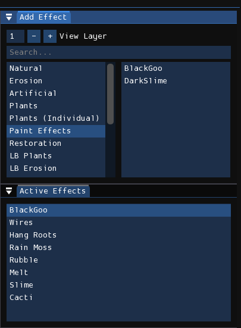
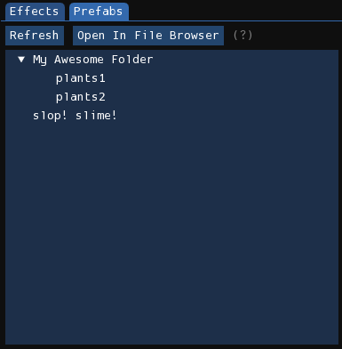
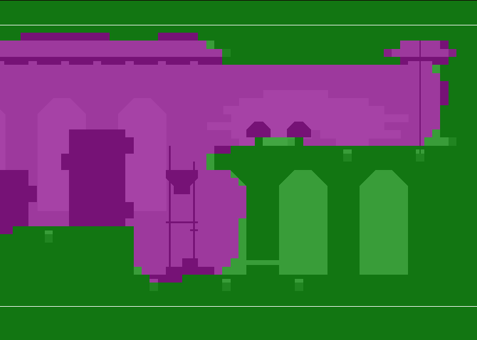

Effects
The effects editor is used to add procedurally generated effects to the level. Many of them manipulate pixels in the rendered image to make stuff, for example, look like they're drooping. Some effects may add decorative objects in the level, such as plants, grass, wires, chains, etc.
Creating effects

To create an effect, find the effect you want in the "Add Effect" window and click on it. A new instance of the effect will be added to the "Active Effects" list. Multiple instances of the same effect can be added. Afterwards, you may reorder the order that effects are rendered by clicking and dragging, or by pressing the "Move Up" and "Move Down" buttons. They can also be deleted by right-clicking on them or pressing the "Delete" button.
When adding an effect, it will be placed on the bottom of the active effects list. However, if you already have an effect selected and hold Shift, it will instead be inserted above the currently selected effect. This behavior may also be altered by changing the Effect placement position and Effect placement alt position preferences.
Tip
The two most commonly used effects are BlackGoo and Slime. BlackGoo is used to create a "fog of war" effect, blacking out any solid geometry under it, and permeates the walls of indoor rooms rooms more than outdoor rooms. Slime is a basic erosion drooping effect, and is used in virtually every level.
Effect prefabs

Effect prefabs provide a way to add a pre-set, pre-configured list of effects to
the level at once. The prefab catalog, depicted above, is a mirror of the
filesystem hierarchy located at config/prefabs/effects, with prefabs stored as
JSON files.
Right-clicking on a folder will open a context menu containing items for performing actions in the context of the folder. Doing the same on unoccupied space will also do the same, but on the root prefabs folder. The context menu will contain at least the actions "Create Folder" and "Create Prefab". Selecting "Create Prefab" will open the prefab creation window.
Creating prefabs
The "Create Prefab" window, opened through the context menu of a folder, will show you the active effects list of the currently loaded level. You will then select the effects you want to add to the prefab, choose a name for the prefab, and then press the OK button to create the prefab JSON file. It will store in the JSON file the order the effects appear in in the state of the effects list at the time of prefab creation, as well as the options for each effect.
Loading prefabs
To load a prefab, left-click on a prefab item in the prefabs list. This will insert the effects stored in the prefab at the bottom of the effects list, in the order they were originally organized in the effects list of the level when the prefab was created, as well as the options assigned to each effect.
Effect matrix

With an effect active, its effect matrix will be shown in the level view. The effect matrix controls the strength of the effect at certain locations, where pink represents no effect and green represents a stronger effect. You paint green by holding down the left mouse button, and you paint pink by holding down the right mouse button. You can change the radius of your brush by holding Shift and moving the scroll wheel.
Some effects affect how you edit the effect matrix in a slightly different way. For example, when you create BlackGoo it creates a filled effect matrix rather than an empty one. Some effects, like BlackGoo and the ones in the "Plants (Individual)" category, only allow you to paint in the range of two values: full strength or no effect at all.
Options
Each instance of an effect has a set of configurable parameters that affect how they are rendered. Effects can use their own custom options, but the following is a list of common ones:
- Layers: The layers that the effect will render in.
- 3D: The effect is applied on a per-sublayer basis.
- Affect Gradients And Decals: The effect will affect gradients and decals.
- Color: The effect color to use for the plant. There will be the options 1, 2, and X, corresponding to the two effect colors available in the level palette, and X for "Dead", meaning that it will use the normal level palette.
- Seed: Seed used for random number generation.